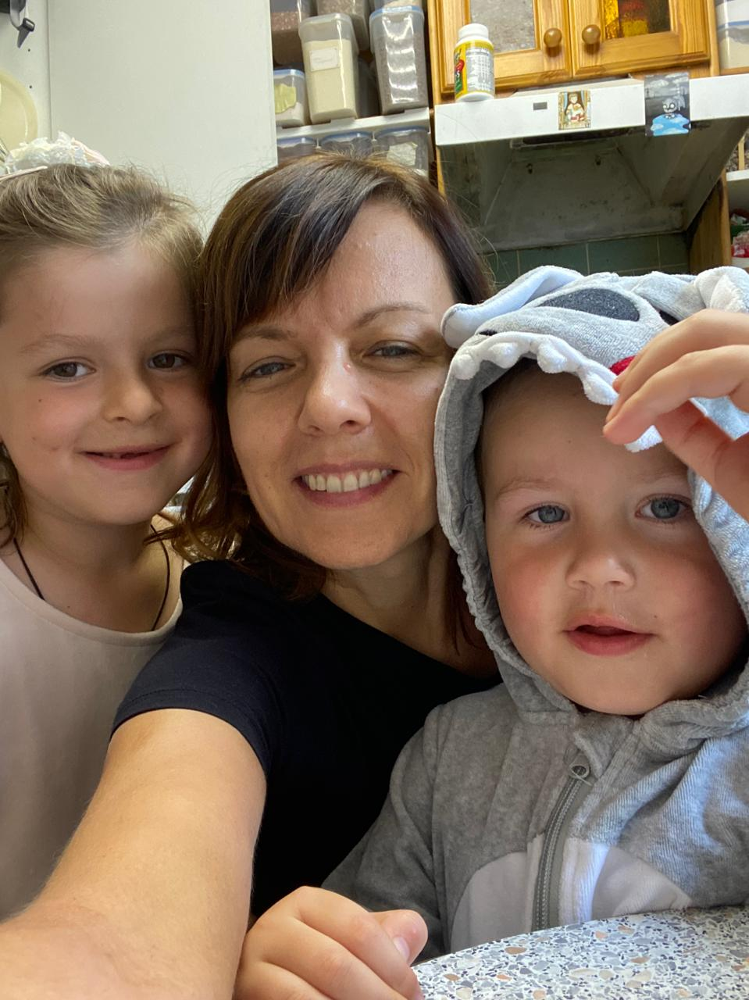
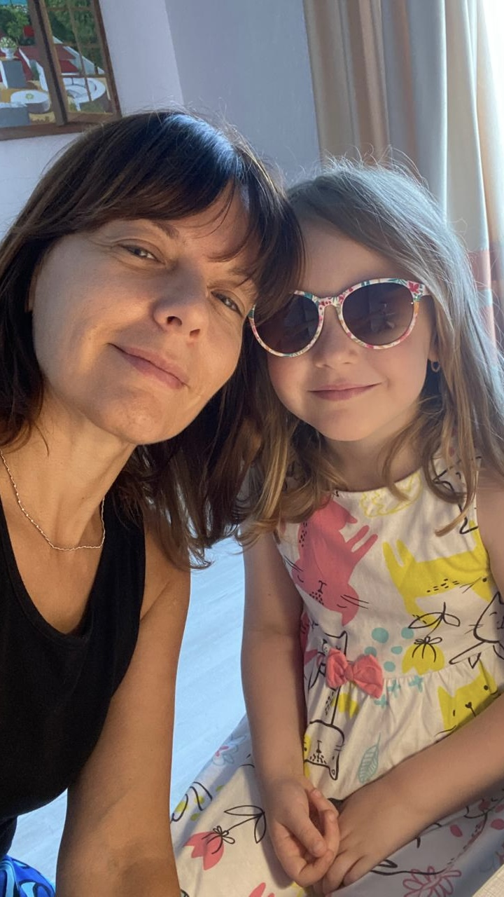
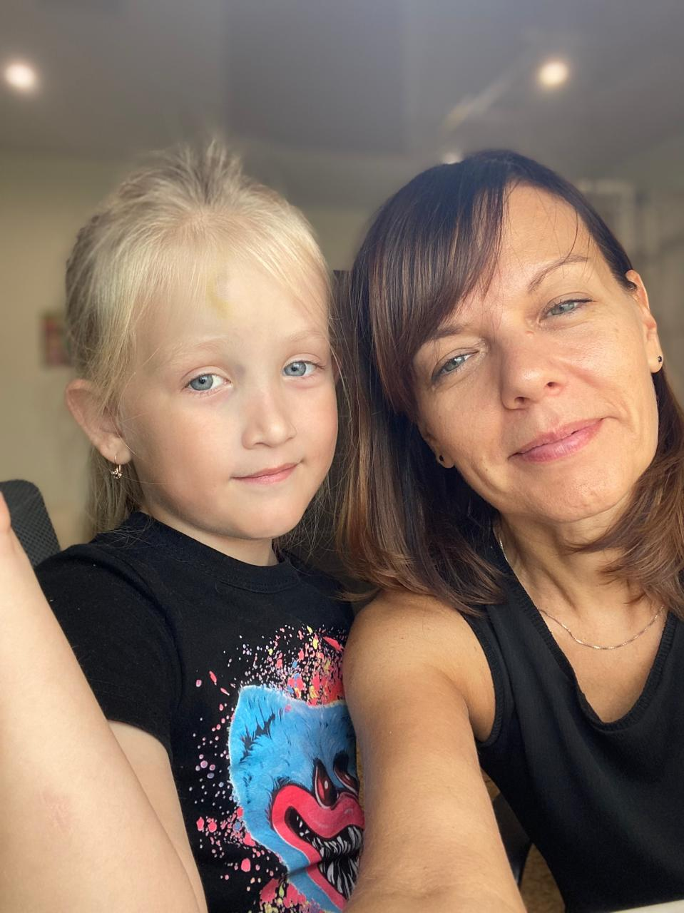
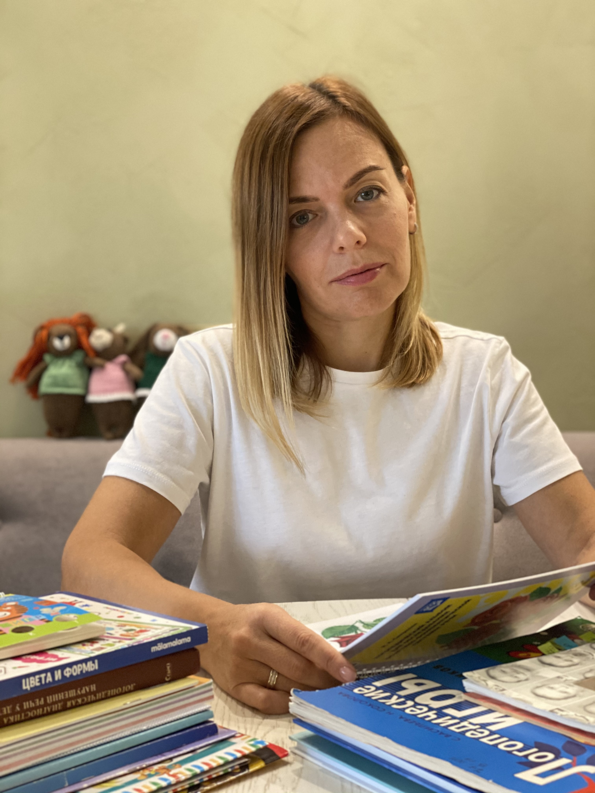

С любовью к детям. С уважением к словам.
Вульфсон Ольга
Логопед • Педагог • Детский психолог во Франции
Для детей 2–13 лет
Развитие речи, поддержка русского языка, занятия онлайн и на Лазурном Берегу.
Записаться
Моя помощь детям и взрослым с нарушением речи
- Коррекция нарушения речи
- Запуск речи у малышей
- Логопедический массаж
- Логоритмика
- Подготовка к школе
- Обучение чтению
- Раннее развитие детей
- Репетиторство. Сопровождение детей по школьной программе. Помощь в выполнении домашних заданий.
- Нейропсихологическое развитие
Кто я и что делаю
Я дипломированный логопед, психолог и педагог начального образования. Я помогаю детям развивать речь, уверенно общаться и раскрывать свои способности.
Помогаю детям в билингвальной среде освоить и сохранить родной русский язык.
Ведь слова обретают силу, когда звучат правильно. Я не просто учу говорить определённый звук, а помогаю развить внимание, зрительное и слуховое восприятие, память и мышление. Но в первую очередь я учу поверить в себя и свои силы. Помогаю раскрыть способности, почувствовать свою индивидуальность, уникальность.
Считаю своим призванием помогать людям. Люблю работать с детьми, потому что благодаря им постоянно хочется развиваться, идти в ногу со временем, с новыми технологиями — потому что с детьми интересно, они видят мир по-другому, они очень творческие и эмоциональные. И самое главное, люблю свою работу за то, что могу менять качество жизни людей в лучшую сторону. Меня вдохновляют успехи учеников, радость родителей за своих детей!


Диагностика
Первичная консультация-диагностика длится 1,5 часа и включает в себя общение с ребёнком, выполнение заданий, игр, а также общение с родителем, сбор и анализ информации.
По результатам диагностики будет сделано логопедическое заключение и даны рекомендации.
Как проходят занятия
Мои занятия проходят в интересном для ребёнка формате: игры, двигательная активность, сенсорные материалы, развитие внимания, памяти, мышления и связной речи.
Профессиональный путь
Ленинградский государственный университет имени А.С. Пушкина (Санкт-Петербург). Профессиональная переподготовка по специальности «Логопедия».
Российский государственный педагогический университет имени А.И. Герцена (Санкт-Петербург). Высшее образование по специальности «Педагогика и методика начального образования». Квалификация: учитель начальных классов, детский психолог.
Санкт-Петербургское педагогическое училище № 1 имени Н. А. Некрасова. Специальность «Педагогика и методика начального образования».
Моё образование и профессиональный путь сформировались в Санкт-Петербурге — городе с одной из самых сильных педагогических и логопедических школ России. Именно здесь были заложены принципы, которыми я руководствуюсь в своей работе:
- комплексный взгляд на развитие ребёнка
- уважение к личности каждого ребёнка
- научно обоснованные методики
- тесное сотрудничество с семьёй
- обучение через интерес, игру и положительную мотивацию
Сегодня эти принципы помогают мне сопровождать русскоязычных детей и детей-билингвов, живущих во Франции и других странах, сочетая классические традиции логопедии с современными международными подходами.
Дипломы и документы


Как проходят занятия?
Каждое занятие строится индивидуально.
Развиваем внимание, память и мышление.
Логопедическое занятие, 1 час
70 €
за занятие с выездом
Развивающее занятие, 1 час
70 €
за занятие с выездом
Онлайн сопровождение и подготовка домашних заданий с ребёнком, 1 час
18 €
за занятие онлайн
Что говорят обо мне родители
★★★★★«Ольга занимается с двумя нашими детьми уже больше полугода. Старшей дочери успешно поставили звук «Р», а самое главное — дети всегда с радостью ждут каждого занятия. Для меня это показатель настоящего педагога. Спасибо за профессионализм, доброжелательность и любовь к детям!»
★★★★★«Для нас было очень важно найти специалиста, который умеет работать не только с нейротипичными детьми, но и с детьми с особенностями развития. Ольга быстро нашла контакт с ребёнком и сумела заинтересовать его занятиями. Очень грамотный, внимательный и душевный специалист. Искренне рекомендую!»
★★★★★«Дочь занимается уже около года. На занятиях развиваются не только речь и произношение, но и внимание, память, мышление, пространственное восприятие и подготовка к письму. Даже если ребёнок приходит без настроения, Ольга умеет увлечь его игрой и создать атмосферу, в которой хочется заниматься.»
★★★★★«Мы совместили логопедические занятия и подготовку к школе. Всё проходит в игровой форме, поэтому ребёнок совсем не устаёт и всегда вовлечён в процесс. Уже через несколько месяцев мы увидели заметные результаты и в речи, и в общем развитии. Сын пошёл в первый класс уверенным и подготовленным.»
★★★★★«После переезда во Францию мы очень переживали, что сын начнёт забывать русский язык. Благодаря занятиям он не только сохранил интерес к родной речи, но и стал увереннее говорить по-русски, читать и с удовольствием общаться с бабушкой и дедушкой по видеосвязи. Для нашей семьи это оказалось по-настоящему бесценным.»
★★★★★«После школы сыну было сложно самостоятельно выполнять домашние задания. Ольга помогла разобраться в сложных темах, научила планировать работу и постепенно стала развивать самостоятельность. Домашние задания перестали быть ежедневным стрессом для всей семьи.»
★★★★★«Мы ещё продолжаем заниматься, но результат уже заметен. Очень нравится спокойный, доброжелательный подход, умение заинтересовать ребёнка и объяснить даже сложные вещи простым языком. Видно, что занятия строятся индивидуально и с большим вниманием к особенностям каждого ребёнка.»
★★★★★«Когда находишь специалиста, которому спокойно доверяешь своего ребёнка, это огромная удача. Ольга сочетает профессиональные знания логопеда, педагога и психолога, поэтому помогает не только с речью, но и с развитием уверенности, внимания и интереса к обучению. Именно поэтому мы уже рекомендовали её своим друзьям.»
★★★★★«Когда мы начали занятия, сын почти не говорил и чаще объяснялся жестами. Ольга быстро нашла к нему подход: всё проходило через игру, движение и интересные задания. Постепенно появились первые слова, потом короткие фразы, а вместе с ними — желание общаться. Для нас это был огромный шаг и большая радость.»
Связаться со мной
Côte d'Azur, France